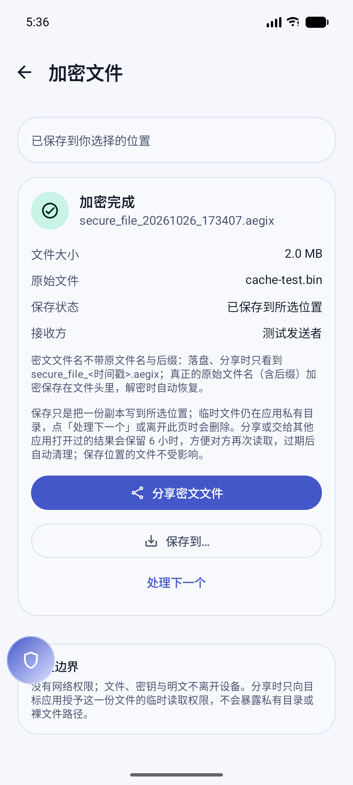

单文件流式加解密
AES-256-GCM 加密内容，RSA-OAEP 包装密钥，SHA256withRSA 对明文签名。读写是流式的，不把大文件整体载入内存。
AES-256-GCM能力
不是把整个文件塞进内存再做加密。流式读写、分卷传输、接收端验签，都是为了让大文件也能安全地跨设备移动。
AES-256-GCM 加密内容，RSA-OAEP 包装密钥，SHA256withRSA 对明文签名。读写是流式的，不把大文件整体载入内存。
AES-256-GCM多个文件或文件夹先打包成 ZIP，再按 50 MB 到 2 GB 切成可独立发送的加密分卷。每卷自带集合元数据，缺卷、重卷、混包会被拒绝。
50 MB — 2 GB解密后先验证发送方签名。签名不匹配时会明确标记“发送者未识别”，不静默接受，也不把未知来源当成可信来源。
SHA256withRSA密钥对在设备上生成。私钥以口令加密保存，Android 再用 Keystore 包装；备份也走口令加密，不把私钥明文写到外部存储。
Android KeystoreAndroid 结果页可以直接解压。拒绝 ZipSlip、超限条目和重复路径，重名自动加后缀，不覆盖已有文件。
ZipSlip 防护Android 与 Windows 依赖同一份纯 Java 加密内核，使用同一套 .aegix 容器。容器版本 1 自 1.4.0 起冻结。
流程
发送方和接收方各自持有密钥。中间经过聊天工具、网盘或 U 盘都只是运输，不改变“只有接收方能打开”的边界。
在本机生成密钥对，或导入已有密钥。把公钥交给对方，私钥留给自己。
选择文件与接收方公钥。大文件按需切分，每一卷都能单独发送。
接收方选齐全部分卷，合并、校验整包摘要、解密，再确认发送方签名。
Android 网络权限
清单没有申请 INTERNET。这不是“默认不联网”，而是系统层面没有这项权限。
安全模型
密钥生成、加解密、签名和分卷都在本机完成，不经过任何服务器。
解密后先验签；签名不匹配时明确提示，不静默接受。
外层密文文件名只含时间戳与卷号；原文件名保存在加密头里，解密时恢复。
Android 版没有网络调用；不上传文件、密钥、文件名或使用记录。
界面
没有账户体系，没有信息流。打开就是密钥与文件操作，结果页会明确告诉你文件去了哪里、下一步能做什么。

下载
当前版本 1.4.0。APK 与 Windows 安装包都从 GitHub Releases 分发；源码仓库不提交二进制。
不申请网络权限，支持单文件、文件夹、分卷、联系人公钥和 Android Keystore。
便携版自带 Java 运行时，数据在程序旁的 data 目录；安装器适合固定放在 Program Files。
安装器需要管理员权限；卸载不会删除 %APPDATA%\CryptoAssistant\data。Android 安装需要允许未知来源应用。
常见问题
如果这里没有回答你的问题，去 Issues 里留一条可复现的记录。
不会。Android 应用不申请 INTERNET 权限；密钥生成、加解密、签名和分卷都在本机完成。分享时只把选中的密文文件交给目标应用。
项目以 GPL-3.0-only 开源，按侧载方式分发。APK 和校验值都在 GitHub Releases；安装时需要允许“安装未知来源应用”。
便携版保存在 CryptoAssistant.exe 旁的 data 目录；安装版回退到 %APPDATA%\CryptoAssistant\data。卸载程序不会删除这个目录，需手动清理。
请先备份、先小范围验证。项目不宣称经过第三方安全审计，真机验收矩阵也尚未完成；软件按“原样”提供，是否满足你的安全需求需要自行评估。
它是 GitHub Pages 上的静态站，没有服务器接收表单。反馈与贡献统一走 GitHub Issues；页面不加载统计脚本，也不设置 Cookie。